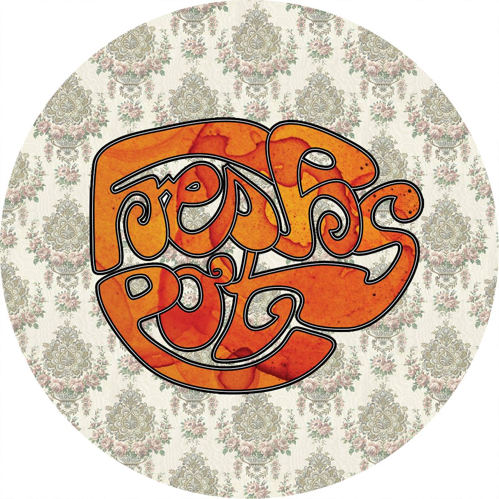
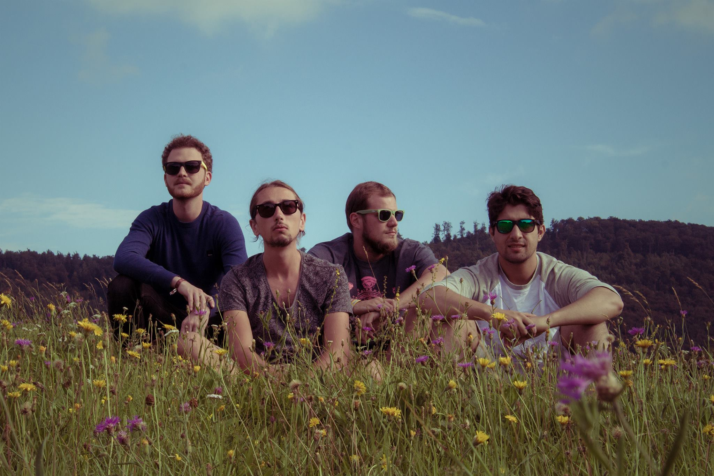

10-08-19
Musikerplatz, Kaiserslautern
<a href="http://freshpotsofficial.bandcamp.com/album/fresh-pots">Fresh Pots by Fresh Pots</a>
2017, Ivy House

Contact us at
info@freshpots.de
.
And check us out on
Facebook
!
Impressum